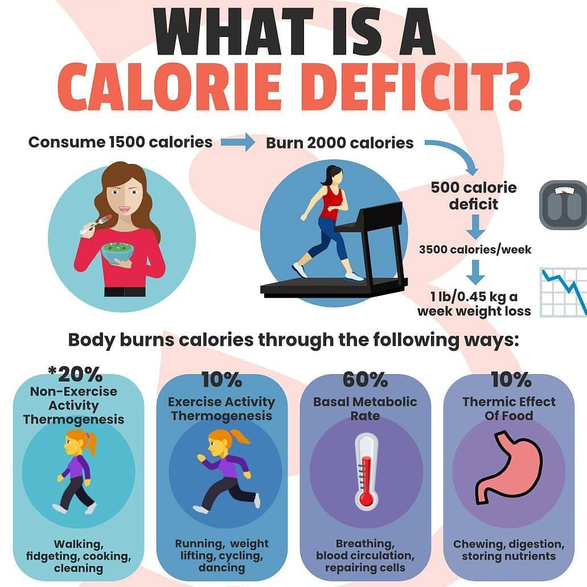
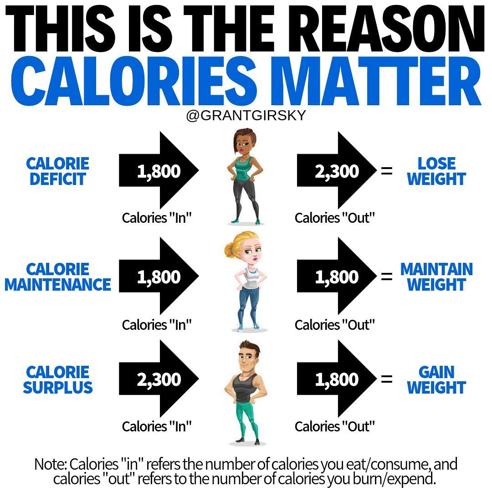
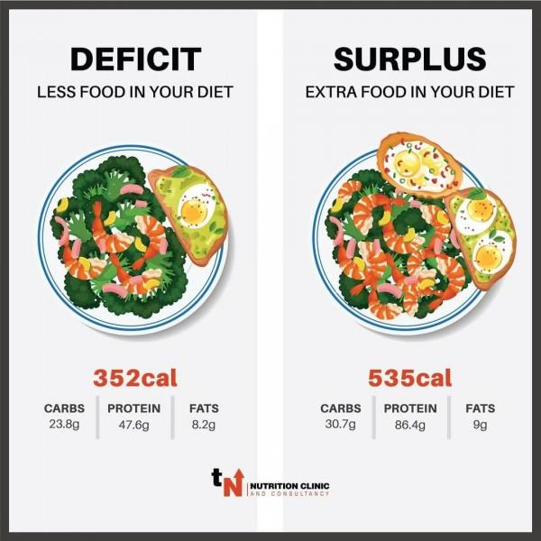

What is a Calorie Deficit?
What and why it's important for weight loss?
Calories are the units of energy you get from foods and beverages, and when you consume fewer calories than you burn, you achieve a calorie deficit.
The calories you burn or expend each day, also known as calorie expenditure which include the following three components:
(1) Resting energy expenditure (REE).
(2) Thermic effect of food.
(3) Activity energy expenditure.
If you provide your body fewer calories than it needs to support these three components of calorie expenditure, you put your body into a calorie deficit. Doing so consistently for long periods results in weight loss.
Conversely, you will gain weight if you regularly provide your body more calories than it needs to support these functions. This is called a calorie surplus.
How many calories a person needs each day varies based on their:
How to calculate calories need?
To perform a manual calculation, moderately active people can multiply their current body weight by 15 to estimate how many calories they would need each day.
Then, to determine how many calories they should consume for a healthful calorie deficit, they can subtract roughly 500 calories from that number. However, people should ensure that they do not consume too few calories. It is also important to note that exercising can also contribute to a calorie deficit.
A person can also use their basal metabolic rate (BMR) and activity levels to determine their current caloric needs. They can use one of the following formulas to determine their BMR, according to their sex:
Adult Male:
Adult Female:
Once a person has their BMR, they can use one of the following formulas, based on their activity levels, to determine their caloric need:
Still, to ensure healthy weight loss and adequate nutrient intake, women should not consume fewer than 1,200 calories per day, and men no fewer than 1,500 calories.
People can also talk with their doctor or nutritionist for the most accurate caloric intake estimates. These professionals can tailor the estimate based on the person and their lifestyle.




For More Info Click Here.